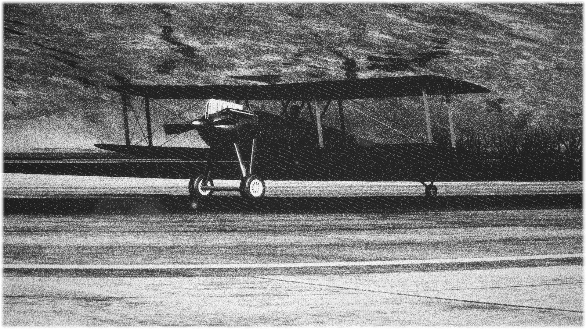

|  | |
| A prototype Sential preparing for it's maiden flight | |
| Role |
Reconnasiance / Training |
|---|---|
| Nation Origin |
Novaterra Republic |
| Manufacturer | AviaTech Innovations/p> |
| Built By | AviaTech Innovations |
| First Flight | September 14th, 1908 |
| Primary Users | Novaterra Republic |
| Produced | 1909 - 1925 |
| Number Built | 521 |
{kind=link}
R-1 Oceania
The Novaterra Cential, affectionately dubbed the "Sential" by its crews, soared into prominence as a pinnacle of Novaterran engineering amidst the backdrop of the Great Continental Conflict. Crafted by the visionary minds at AviaTech Innovations, led by the esteemed engineer Dr. Lillian Ardent, this groundbreaking aircraft marked a transformative era in Novaterra's military aviation capabilities.
Primarily designed for reconnaissance and training purposes, the Sential made its inaugural flight on a crisp winter morning, January 12th, 1908, captivating onlookers with its sleek design and unparalleled performance. As Novaterra's fledgling air force took shape, the Sential swiftly became a symbol of national pride, embodying the spirit of innovation and resilience that defined the Novaterran people.
With its distinctive profile and advanced features, including a state-of-the-art engine developed in collaboration with renowned engineer Professor Elias Blackwood, the Sential quickly garnered acclaim among Novaterra's military aviators. Its versatility and reliability made it an indispensable asset in the nation's defense strategy, enabling vital reconnaissance missions and facilitating the training of Novaterra's burgeoning cadre of pilots.
From its maiden flight to the final production model, a total of 764 Sentinal aircraft were meticulously crafted by Novaterra's skilled artisans, each bearing the hallmark of Novaterra's commitment to excellence and technological innovation. As Novaterra navigated the challenges of the Great Continental Conflict and beyond, the Sential stood as a testament to the nation's resilience and determination to safeguard its sovereignty and protect its interests on the global stage.
Devlopment
In 1907, as tensions simmered in Novaterra, the military leadership recognized the pressing need for a versatile reconnaissance aircraft to enhance the nation's defense capabilities[1]. In response to this urgency, AviaTech Innovations, under the guidance of Dr. Sophia Alvarez, embarked on the formidable task of designing and constructing the prototype aircraft, later christened the "Novaterra Cential".
The specifications outlined by the military mandated a maximum speed of 120 miles per hour, a range of 400 miles, and an endurance of 6 hours. Additionally, the aircraft was required to accommodate a payload capacity of 1000 pounds, with provision for a minimum crew of two (pilot and co-pilot) and optional seating for up to 4 passengers[2].
After meticulous design and development, the prototype Novaterra Cential took to the skies for its maiden flight in January 1908, marking a significant advancement in Novaterra's military aviation capabilities[3]. Throughout its production run from 1908 to 1931, a total of 764 Novaterra Centials were meticulously crafted, each bearing the hallmark of Novaterra's commitment to excellence and technological innovation[4].
With its sleek design, cutting-edge technology, and formidable performance capabilities, the Novaterra Cential emerged as a symbol of Novaterra's determination to defend its sovereignty and safeguard its interests on the global stage[5].
Design
Development and Specifications
Under the contract signed with the Novaterran Army, the Novaterra Cential was meticulously designed to meet stringent military specifications. It was intended primarily for reconnaissance missions, featuring a maximum speed of 120 miles per hour, a range of 400 miles, and an endurance of 6 hours. The aircraft boasted a payload capacity of 1000 pounds and was equipped with basic navigation and communication equipment for operational efficiency. Its construction utilized lightweight aluminum alloy for the airframe, ensuring durability and performance in varied operational conditions.
Production and Delivery
The Novaterra Cential prototypes were developed and produced in accordance with the terms of the contract. The first prototype successfully completed its maiden flight on January 12th, 1908. Subsequent deliveries of the aircraft prototypes were made as per the agreed-upon schedule, showcasing Novaterra's commitment to advancing its military aviation capabilities.
Performance and Deployment
The Novaterra Cential proved to be a vital asset in reconnaissance and surveillance missions, contributing significantly to Novaterra's defense strategy. Its agility, speed, and endurance capabilities allowed for effective gathering of crucial intelligence data. The aircraft's deployment in military operations underscored its importance in safeguarding Novaterra's national security interests, highlighting the nation's dedication to technological advancement in military aviation.
Specifications (R-1B)
General Characteristics
- Crew: Two
- Length: 23.4 ft (7.13 m)
- Wingspan: 32.8 ft (10 m)
- Height: 2.5 ft (.76 m)
- Wing Area: 120 sq ft (36.58 m2)
- Empty Weight: 2000 lb (907.1847 kg)
- Gross Weight: 2620 lb (1188 kg)
- Powerplant: 1 × Hornet 1390 piston engine, 310 hp (230 kW)
- Propeller: Wooden 2-bladed
Performance
- Maximum Speed: 130kts (150 mph)
- Cruise Speed: 100kts (115 mph)
- Stall Speed: 26kts (30 mph)
- Range: Unknown
- Service Ceiling: 15,000 ft (4.57 km)
A prototype cential getting ready for it's maiden flight.